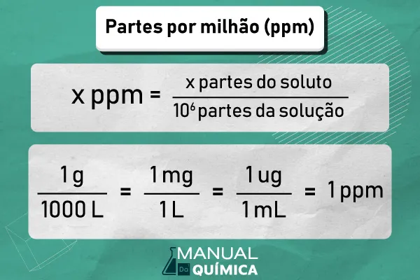
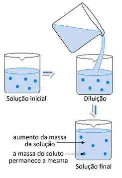
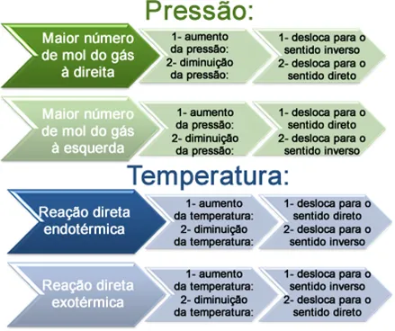
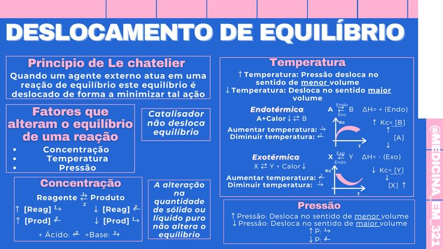
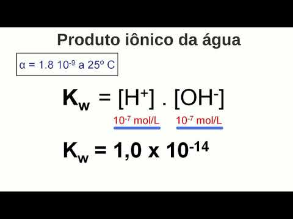
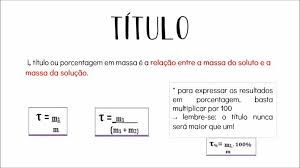

Playlist de Química


Parte por milhão (ppm)
Ela indica quantas "partes" do soluto existem em um milhão (10^6) de partes da solução (ou do solvente). Por exemplo, dizer que a poluição do ar por monóxido de carbono é de 10 ppm significa que, para cada um milhão de moléculas ou unidades de volume do ar, 10 são de monóxido de carbono. Em termos de massa em soluções aquosas, 1 ppm é frequentemente equivalente a 1 mg do soluto por 1 kg ou 1 L da solução.
Diluição das soluções
A diluição de soluções é um procedimento comum em química que consiste em adicionar mais solvente (geralmente água) a uma solução já existente, sem alterar a quantidade de soluto presente. O efeito principal da diluição é a diminuição da concentração da solução, pois a mesma quantidade de soluto passa a ocupar um volume maior. Este processo obedece ao princípio da conservação da massa do soluto, que é matematicamente expresso pela relação Ci . Vi = Cf . Vf, onde o produto da concentração inicial (Ci) pelo volume inicial (Vi) é igual ao produto da concentração final (Cf) pelo volume final (Vf), sendo uma técnica fundamental em análises laboratoriais e no ajuste de concentrações para reações químicas.
Misturas
Em Química, uma mistura é o resultado da união física de duas ou mais substâncias puras (elementos ou compostos) em que cada componente mantém suas propriedades químicas originais. Diferentemente dos compostos, que se unem por ligações químicas, as misturas podem ser separadas por métodos físicos. Elas são classificadas em dois tipos principais: homogêneas, que apresentam apenas uma fase e uma aparência uniforme (como água e sal dissolvido), e heterogêneas, que apresentam duas ou mais fases e componentes visualmente distinguíveis (como água e óleo). O estudo das misturas e dos métodos de separação é fundamental para a análise e o processamento de materiais em diversas áreas

Equilíbrio Químico
O Equilíbrio Químico é o estado dinâmico atingido em reações reversíveis (aquelas que ocorrem nos dois sentidos) em sistemas fechados e sob condições constantes de temperatura e pressão. Nesse estado, as velocidades das reações direta (formação de produtos) e inversa (regeneração de reagentes) se igualam, fazendo com que as concentrações de reagentes e produtos permaneçam constantes ao longo do tempo, embora as reações continuem ocorrendo em nível molecular. A posição desse equilíbrio é determinada pela Constante de Equilíbrio (K), que reflete a proporção entre as concentrações de produtos e reagentes nesse ponto de estabilidade.

O Princípio de Le Chatelier é uma regra fundamental da Química que descreve como um sistema em equilíbrio químico responde a perturbações externas. Ele afirma que, quando um sistema em equilíbrio é submetido a uma alteração de concentração, temperatura ou pressão, ele irá se deslocar no sentido que minimiza ou anula o efeito dessa perturbação, buscando um novo estado de equilíbrio. Por exemplo, se a concentração de um reagente é aumentada, o equilíbrio se desloca no sentido da formação de produtos para consumir o excesso, sendo este princípio crucial para otimizar rendimentos em processos industriais.
Os fatores que têm a capacidade de deslocar um equilíbrio químico são aqueles previstos pelo Princípio de Le Chatelier: a concentração das espécies (reagentes ou produtos), a temperatura e a pressão (em sistemas gasosos). Um aumento na concentração de um reagente, por exemplo, desloca o equilíbrio no sentido dos produtos; uma elevação da temperatura favorece o sentido da reação que absorve calor (endotérmica); e, em sistemas gasosos, o aumento da pressão desloca o equilíbrio para o lado com menor volume (ou menor número de mols gasosos). O único fator que altera o valor da Constante de Equilíbrio (K) é a temperatura.
O Produto Iônico da Água (Kw) representa o equilíbrio de autoionização da água e, a 25°C possui um valor constante de 1,0 . 10^-14. O pH (potencial hidrogeniônico) e o pOH (potencial hidroxiliônico) são escalas logarítmicas que quantificam a acidez ou basicidade de uma solução. O pH mede a concentração de íons H+ e o pOH mede a concentração de íons OH. Por estarem interligados, em qualquer solução aquosa a 25°C, a soma de pH e pOH resulta sempre em 14.
O Título (T) ou Fração em Massa é uma das formas de expressar a concentração de uma solução, indicando a proporção da massa do soluto em relação à massa total da solução. É calculado pela razão entre a massa do soluto (Msoluto)e a massa da solução (Msolução), sendo uma grandeza adimensional (não possui unidade). Por exemplo, um título de 0,20 significa que 20% da massa total da solução é composta pelo soluto. Frequentemente, o título é multiplicado por 100 para ser expresso em porcentagem em massa (%m/m), facilitando a compreensão da composição da mistura.
A concentração comum (C) e a concentração molar (Molaridade ou [mol/L] são duas formas essenciais de quantificar a quantidade de soluto presente em uma solução. A concentração comum expressa a relação entre a massa do soluto e o volume da solução, sendo geralmente medida em gramas por litro (g/L). Já a concentração molar expressa a relação entre a quantidade de matéria do soluto (em número de mols) e o volume da solução, sendo a medida mais utilizada em cálculos estequiométricos e reações químicas, dada em mols por litro (mol/L). Ambas fornecem informações cruciais sobre a composição da solução, mas a molaridade relaciona-se diretamente com o número de partículas.
.jpeg)